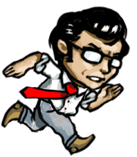
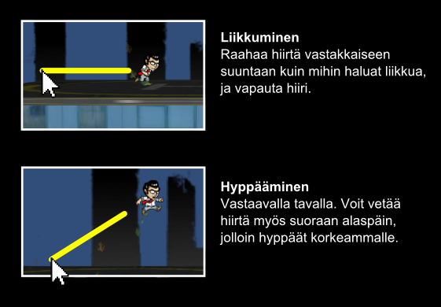

Pelin aloittaminen
LOL apua, miten tällä hypätään? Ohjaus on vähän erilainen kuin mihin muissa peleissä on totuttu. Ideana on, että olisi mahdollista hypätä missä tahansa kulmassa. Pisin hyppy tulee kiihdyttämällä ensin juoksemalla ja sitten hyppäämällä suoraan ylöspäin.

Muita ohjeita
Oon v***u jumissa. Main menussa ja "You Failed!"-ruudussa voi hypätä seuraavaan leveliin painamalla
Spacea. Mihin tahansa leveliin pääset näissä valikoissa painamalla seuraavia numeroita:
| 0 | Practice level |
| 1 - 3 | City Life -levelit |
| 4 - 6 | Above Reality -levelit |
| 7 - 9 | Isolation-levelit |
Oon v***u jumissa tossa vikassa Isolation-levelissä. Älä hyppää. Run, Forrest, run!